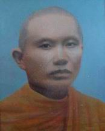

|
ภาพถ่ายโบสถ์ของวัดท่าไทร
โดยมีระเบียง หรือวิหารคตล้อมรอบ
ภายในระเบียงคต จะปูกระเบื้องอย่างดี และประดิษฐานพระพุทธรูป ขนาดหน้าตัก
๓๒ นิ้ว จำนวน ๓๖ องค์ เรียงรายรอบโบสถ์
ส่วนด้านขวา เป็นหอกลอง - ระฆัง
ภาพถ่าย "หอกลอง
- ระฆัง" ในระยะใกล้ เพื่อให้เห็นส่วนประกอบของลวดลายประดับ
ซึ่งวิจิตร สวยงาม และใช้ประโยชน์ได้เป็นอย่างดี
๑.
ความเป็นมาของวัด.-
 วัดท่าไทร เป็นวัดที่เก่าแก่ ซึ่งได้รับอนุญาตให้สร้างและตั้งเป็นวัดในพระพุทธศาสนา
อย่างถูกต้องตามกฎหมาย เมื่อปี พ.ศ. ๒๒๐๐ (นับจนถึงปัจจุบันเป็นเวลาประมาณ
๓๕๓ ปี)
วัดท่าไทร เป็นวัดที่เก่าแก่ ซึ่งได้รับอนุญาตให้สร้างและตั้งเป็นวัดในพระพุทธศาสนา
อย่างถูกต้องตามกฎหมาย เมื่อปี พ.ศ. ๒๒๐๐ (นับจนถึงปัจจุบันเป็นเวลาประมาณ
๓๕๓ ปี)
ตั้งอยู่ที่เลขที่ ๓๒๔ หมู่ที่ ๒ ตำบลท่าทองใหม่ อำเภอกาญจนดิษฐ์
จังหวัดสุราษฎร์ธานี ๘๔๒๙๐
มีเนื้อที่ประมาณ ๓๕ ไร่ (ในอดีตคือ หมู่ที่ ๗ ตำบลทุ่งกง) ได้รับ
พระราชทานวิสุงคามสีมา เมื่อวันที่ ๑๒ เมษายน ๒๕๑๑ กว้าง ๒๒ เมตร,
ยาว ๓๒ เมตร
ได้รับคัดเลือกและประกาศให้เป็นวัดพัฒนาตัวอย่างประจำปี ๒๕๓๓ จาก
กรมการศาสนา กระทรวงศึกษาธิการ เมื่อวันที่ ๑๔ มิถุนายน ๒๕๓๓ และ
ได้รับการคัดเลือกและประกาศให้เป็น อุทยานการศึกษา ของจังหวัด
สุราษฎร์ธานี เมื่อ พ.ศ. ๒๕๓๖
ได้รับพระราชทานวิสุงคามสีมา เท่าที่พอสืบหาข้อมูลได้
ปรากฏว่า วัดท่าไทร ได้รับพระะราชวิสุงคามสีมา ๒ ครั้ง ได้แก่
ครั้งแรกเมื่อ
วันที่ ๑๒ เมษายน ๒๕๑๑ กว้าง ๒๒ เมตร ยาว ๓๒ เมตร
ครั้งที่
๒ ขอรับพระราชทานวิสุงคามสีมาโดยขอขยายเขตกว้างจากเดิม
เพื่อประโยชน์แก่พระสงฆ์ ในการทำสังฆกรรมตามพระวินัย โดยได้รับพระราชทานวิสุงคามสีมา
เมื่อ วันที่ ๒๒ กันยายน ๒๕๔๖ กว้าง ๓๐ เมตร ยาว ๔๐ เมตร
อุโบสถสร้างด้วยคอนกรีตเสริมเหล็ก มีหน้าต่างข้างละ ๕ ช่อง แกะสลักประดับด้วยมุข
ทุกบาน ประตูด้านหน้า ๒ ช่อง แกะสลักประดับมุข ประตูด้านหลัง ๒ ช่อง
แกะสลักประดับมุข หลังคาเป็นแบบทรงไทย ๓ ชั้น มุงด้วยกระเบื้องเคลือบเงาสีเขียว
ฉาบปูนทั้งด้านนอกและด้านใน มีประตูเข้าทางด้านหน้าและด้านหลัง
รอบอุโบสถได้สร้างวิหารคต
กว้าง ๔ เมตร สูง ๓ เมตร ก่อกำแพงด้วยอิฐ ฉาบปูนทั้งด้านนอกและด้านในรอบวิหารคตทั้ง
๔ ด้าน รอบระเบียงวิหารคต เป็นที่ประดิษฐานพระพุทธรูปปางต่าง ๆ ขนาดหน้าตักกว้าง
๓๒ นิ้ว จำนวน ๓๖ องค์ พื้นภายในปูกระเบื้องอย่างดีสร้างเรียบร้อยแล้ว
พระประธานในโบสถ์องค์ปัจจุบันสร้างด้วยทองเหลืองทั้งองค์ ลงรักปิดทอง
(องค์อยู่ด้านหลังสุด)หน้าตักกว้าง ๕๘ นิ้ว สูง ๗๙ นิ้ (องค์เดิม
ซึ่งประดิษฐานอยู่ด้านหน้าขององค์ปัจจุบัน เป็นพระพุทธรูปซึ่งสร้างด้วยศิลาแลง
ลงรัก ปิดทอง กว้าง ๔๘ นิ้ว สูง ๖๘ นิ้ว)
ภาพแสดงโบสถ์และบริเวณสนามภายในวัดท่าไทร
๒.
ลักษณะเด่นของวัด.-
๑.เป็นวัดที่เก่าแก่
ซึ่งสร้างและตั้งเป็นวัดมากว่า ๓๔๗ ปี (พ.ศ. ๒๕๔๗ - ๒๒๐๐=๓๔๗)
๒.เป็นวัดที่ถูกต้องตามกฎหมาย คือ
ได้รับอนุญาตให้สร้างและตั้งเป็นวัดเรียบร้อยตามกฎหมายแล้ว
๓.เป็นวัดพัฒนาตัวอย่างตามโครงการวัดพัฒนาของ
กรมการศาสนา กระทรวงศึกษาธิการ โดยได้รับการพิจารณาและประกาศให้เป็นวัดพัฒนาตัวอย่าง
เมื่อ พ.ศ. ๒๕๓๓
๔. เป็นอุทยานการศึกษาของจังหวัดสุราษฎร์ธานี
เมื่อ พ.ศ. ๒๕๓๖
๕. เป็นที่ตั้งของศูนย์อบรมประชาชนประจำตำบลท่าทองใหม่
๖. เป็นที่ตั้งของที่อ่านหนังสือประจำตำบลท่าทองใหม่
๗. เป็นวัดที่ตั้งอยู่ในศูนย์กลางแหล่งชุมชน
และตั้งอยู่ในเขตสุขาภิบาลตำบลท่าทองใหม่ การคมนาคม ไป - มาสะดวกมาก
๘. เป็นศูนย์กลางชุมชนในการจัดงานและจัดกิจกรรมต่าง
ๆ เช่น ประชุมชาวบ้าน อบรม สัมมนา ฯลฯ ของหน่วยราชการและหน่วยงานเอกชนทั่วไป
๙. เป็นที่ตั้งของศูนย์ครูพระปริยัตินิเทศก์จังหวัดสุราษฎร์ธานี
๑๐.เป็นที่ตั้งศูนย์พระเปรียญและพระบัณฑิตอาสาพัฒนาประจำจังหวัดสุราษฎร์ธานี
๑๑.เป็นวัดที่เข้าร่วมโครงการลานวัด
ลานใจ ลานกีฬา ของกรมการศาสนา กระทรวงศึกษาธิการ ตั้งแต่ปี ๒๕๔๐
เป็นต้นมาจนกระทั่งปัจจุบัน
๑๒.เป็นสถานที่ให้การฝึกอบรมวิชาชีพพิมพ์ดีดภาษาไทย
- อังกฤษ แก่พระภิกษุ สามเณร นักเรียน นักศึกษา ข้าราชการ ประชาชน
และเยาวชนทั่วไป ฟรี..! (ต้องการทราบรายละเอียดดูได้ที่
www.geocities.com/comcenter_net
)
๑๓. เป็นสถานที่ให้การฝึกอบรมคอมพิวเตอร์โปรแกรมธุรกิจ เช่น Dos,
CW, RW, Rama Word, Windows, Windows ๙๕, Windows ๙๘, Microsoft
Word ๖, ๗, ๙๗, ๒๐๐๐, Microsoft Excel ๕, ๗, ๙๗, ๒๐๐๐, Microsoft
Powerpoint ๔, ๗, ๙๗, ๒๐๐๐
๑๔.เป็นที่ตั้งศูนย์ฝึกอบรมช่างเทคนิคคอมพิวเตอร์ ซึ่งเปิดทำการอบรมหลักสูตรเทคนิคคอมพิวเตอร์
เพื่อให้สามารถประกอบ ซ่อม อัพเกรด และดูแลรักษาคอมพิวเตอร์ เป็นต้น
แก่พระภิกษุ สามเณร ข้าราชการ ประชาชน และเยาวชนทั่วไป ฟรี..!
๑๔.เป็นศูนย์บริการประกอบ
ซ่อม และอัพเกรดคอมพิวเตอร์ ฟรี..! แก่วัด
หน่วยงานราชการ เอกชน และประชาชนทั่วไป
๑๕.เป็นที่ตั้งศูนย์พัฒนาเด็กเล็กวัดท่าไทร
เทศบาลตำบลท่าทองใหม่
๑๖.เป็นที่ตั้งของสำนักงานเจ้าคณะจังหวัดสุราษฎร์ธานี
(ต้องการทราบรายละเอียดดูได้ที่
www.songsurat.th.gs
๑๗.เป็นวัดที่ตั้งอยู่ในเขตเทศบาลตำบลท่าทองใหม่
๑๘.เป็นที่ตั้งของสำนักงานเลขานุการเจ้าคณะภาค
๑๖
๑๙.เป็นที่ตั้งของศูนย์พัฒนาคุณธรรมจังหวัดสุราษฎร์ธานี
(ต้องการทราบรายละเอียดดูได้ที่
www.rakdee.net)
๒๐.เป็นที่ตั้งของหน่วยฝึกอบรมพัฒนาจิต
ต้องการทราบรายละเอียดดูได้ที่
www.rakdee.net
๒๑.เป็นที่ตั้งหน่วยบริการประชาชนวัดท่าไทร
ตำบลท่าทองใหม่ (ป้อมตำรวจ)
ศาลาการเปรียญ
เป็นสถานที่ประกอบพิธี ประชุม สัมมนา ทำบุญกุศล และจัดกิจกรรมโดยทั่วไป
ทั้งของคณะสงฆ์ ส่วนราชการ เอกชน ชุมชน และประชาชนโดยทั่วไป
| |
|
|
| |
|
|
|
ป้ายวัดพัฒนาตัวอย่าง
พ.ศ. ๒๕๓๓
ตามโครงการวัดพัฒนาของ กรมการศาสนา กระทรวงศึกษาธิการ
|
๓.
การปกครองภายในวัด.-
วัดท่าไทรมีการปกครองภายในวัด
โดยยึดเอาหลักพระธรรมวินัย ประเพณีวัฒนธรรม กฎหมาย กฏมหาเถรสมาคม
ระเบียบมหาเถรสมาคม กติกาสงฆ์หนใต้ และระเบียบปฏิบัติของวัด เป็นที่ตั้ง
มีผู้รับผิดชอบบริหารงานดังนี้.-
|
๑.พระเทพพิพัฒนาภรณ์
(ชูชาติ กนฺตวณฺโณ -พัฒนเจริญ)
ป.ธ.๕, น.ธ.เอก, ศิลปศาสตร์มหาบัณฑิต กิตติมศักดิ์
อายุ ๖๘ พรรษา ๔๖
เจ้าคณะจังหวัดสุราษฎร์ธานี
พระปริยัตินิเทศก์จังหวัดสุราษฎร์ธานี
ประธานคณะกรรมการสถานศึกษาขึ้นพื้นฐาน ร.ร.วัดท่าไทร,
ร.ร.สุราษฎร์ธานี
ประธานศูนย์พัฒนาคุณธรรมจังหวัดสุราษฎร์ธานี |
เจ้าอาวาส |
|
๒.พระสมศักดิ์
ครุธมฺโม (คุณากรโยธิน)
น.ธ. ตรี, ป. ๔
อายุ ๖๖ พรรษา ๒๕ |
ผู้ช่วยเจ้าอาวาส |
|
๓.พระมหาบุญโฮม
ปริปุณฺณสีโล (ไชยฤทธิ์)
ป.ธ.๕,น.ธ.เอก, ศษ.บ. (จาก ม.ส.ธ. รุ่น ๑๕)
อายุ ๔๒ พรรษา ๒๑
อดีตครูใหญ่โรงเรียนพระปริยัติธรรมวัดกรวด (แผนกสามัญศึกษา)
พระเปรียญอาสาพัฒนาประจำจังหวัดสุราษฎร์ธานี
เลขานุการเจ้าคณะภาค ๑๖
ครูสอนพระปริยัติธรรม แผนกธรรม-บาลี
ครูสอนโรงเรียนพระพุทธศาสนาวันอาทิตย์
ครูสอนพระปริยัติธรรม แผนกบาลีของคณะสงฆ์จังหวัดสุราษฎร์ธานี |
ผู้ช่วยเจ้าอาวาส |
|
พระอติชาติ
อภิญาโณ (ตันติยวุฒิ)
ปวส., น.ธ.เอก
อายุ ๓๖ พรรษา ๑๕
ครูสอนพระปริยัติธรรม แผนกธรรม |
ผู้ช่วยเจ้าอาวาส |
|
พระสถาร
ฐานวโร (อายุศะนิล)
ป.๗, น.ธ.เอก
อายุ ๕๕ พรรษา ๑๒
ครูสอนพระปริยัติธรรม แผนกธรรม |
ผู้ช่วยเจ้าอาวาส |
๔.
อาคาร สิ่งปลูกสร้างและเสนาสนะภายในวัด.-
| ๑.โรงอุโบสถ
(สร้างวิหารคตล้อมรอบ) |
จำนวน
๑ หลัง |
| ๒.ศาลาการเปรียญ(๒
ชั้น) |
จำนวน
๑ หลัง |
| ๓.อาคารหอฉัน
(๒ ชั้น) |
จำนวน
๑ หลัง |
| ๔.หอไตร
ซึ่งเป็นที่เก็บรักษาคัมภีร์พระไตรปิฎก (๒ ชั้น) |
จำนวน
๑ หลัง |
| ๕.มณฑปบรรจุอัฐิและรูปเหมือนอดีตเจ้าอาวาสทุกรูป |
จำนวน
๑ หลัง |
| ๖.กุฏิเจ้าอาวาส |
จำนวน
๑ หลัง |
| ๗.กุฏิสำนักงานเลขานุการเจ้าคณะภาค
๑๖ |
จำนวน
๑ หลัง |
| ๘.กุฏิที่พักสงฆ์ (ขนาดใหญ่) |
จำนวน
๑๐ หลัง |
| ๙.กุฏิวิปัสสนา
(จัดสร้างเรียงกันเป็นทิวแถว) |
จำนวน
๒๒ หลัง |
| ๑๐.อาคารสำนักงานมูลนิธิสิญจน์อุทิศดิตถารามฯ |
จำนวน
๑ หลัง |
| ๑๑.ศาลาคู่เมรุ (ศาลา
๑ และ ศาลา ๒) |
จำนวน
๒หลัง |
| ๑๒.เมรุเผาศพ
แบบไร้มลภาวะ / ไร้มลพิษ |
จำนวน
๑ หลัง |
| ๑๓.โรงเก็บของ
(ขนาดใหญ่) |
จำนวน
๒ หลัง |
| ๑๔.ศาลาบาตร |
จำนวน
๒ หลัง |
| ๑๕.หน่วยบริการประชาชนวัดท่าไทร
(ป้อมตำรวจ) |
จำนวน
๑ หลัง |
| ๑๖.ศูนย์อบรมเด็กก่อนเกณฑ์ในวัด
(โดยการสนับสนุนของ อบต.) |
จำนวน
๑ แห่ง |
| ๑๕.แท้งค์น้ำประปาขนาดใหญ่
(สำหรับใช้ภายในวัด) |
จำนวน
๒ แท้งค์ |
| ๑๖.ห้องน้ำ-ห้องสุขา
ขนาด ๒๐ ห้อง |
จำนวน
๒ หลัง |
| ๑๗.ห้องน้ำ-ห้องสุขา
ขนาด ๑๐ ห้อง (หลังศาลาคู่เมรุ) |
จำนวน
๑ หลัง |
| ๑๘.ที่สรงน้ำขนาดใหญ่
(สามารถอาบได้ครั้งละ ๓๐ คน) |
จำนวน
๑ แห่ง |
| ๑๙.ที่สรงน้ำขนาดใหญ่
(สามารถอาบได้ครั้งละ ๑๕ คน) |
จำนวน
๑ แห่ง |
| ๒๐.สระน้ำขนาดใหญ่
(แหล่งศึกษาธรรมชาติ) |
จำนวน
๒ แห่ง |
| ๒๑.เครื่องปั๊มน้ำจากบ่อบาดาล |
จำนวน
๓ แห่ง/ชุด |
| |
มณฑปเป็นที่บรรจุศพของหลวงพ่อชม,เก็บอัฐิและรูปเหมือนของอดีตเจ้าอาวาสวัดท่าไทร
|
|
| |
|
|
| |
ภาพซึ่งแสดงถึงส่วนหนึ่งของกุฏิซึ่งใช้ที่พักอาศัยของพระภิกษุสามเณร
วัดท่าไทร
|
|
อนึ่ง
ขณะนี้วัดท่าไทรกำลังดำเนินการจัดให้มีการก่อสร้าง อาคารสงเคราะห์ผู้สูงอายุ
ขึ้นภายในวัด โดยใช้เนื้อที่เพื่อการนี้ประมาณ ๑๐ ไร่ ๓ งาน ซึ่งจะต้องใช้งบประมาณเพื่อการนี้ประมาณ
๑๐ ล้านบาท และเมื่อสร้างเสร็จเรียบร้อยแล้ว จะสามารถรองรับและให้การสงเคราะห์ผู้สูงอายุ
ได้ครั้งละประมาณ ๑๐๐ คน ผู้มีจิตศรัทธาใคร่จะร่วมบริจาคสนับสนุนโครงการนี้
ขอเชิญติดต่อได้ที่ เจ้าอาวาสวัดท่าไทร โทร. ๐-๗๗๒๗-๓๘๓๔, ๐-๑๖๐๖-๐๒๔๔
ได้ทุกวัน
ภาพแสดงกุฏิเจ้าอาวาส
(กุฏิลัดดาวัลย์)
ซึ่งสร้างถวายโดย นางลัดดาวัลย์ สุภากุล และญาติ
ๆ พร้อมด้วยคณะพุทธบริษัท เมื่อ ๑๙ พฤศจิกายน ๒๕๕๐
ศาลาบุญมีจริง
เป็นสถานที่ให้บริการติดต่อทำบุญกุศล ถวายสังฆทาน บูชาวัตถุมงคลที่วัดจัดทำขึ้น
และทำบุญวันเกิดเสริมดวงชะตาชีวิต (สะเดาะห์พระเคราะห์)
ซึ่งสร้างถวายโดย
นางลัดดาวัลย์ สุภากุล และญาติ
ๆ พร้อมด้วยคณะพุทธบริษัท
๕. สภาพแวดล้อมและสภาพทั่วไปภายในวัด.-
วัดท่าไทร
เป็นวัดที่อยู่ในโครงการพัฒนา ของกรมการศาสนา กระทรวงศึกษาธิการ
และได้รับเลือกเป็นวัดพัฒนาตัวอย่าง เมื่อ พ.ศ.๒๕๓๓
เป็นวัดที่มีสภาพร่มรื่นด้วยธรรมชาต
ิประกอบไปด้วยพันธุ์ไม้นานาชนิด เพราะทั้งอดีตเจ้าอาวาส และเจ้าอาวาสรูปปัจจุบัน
ท่านมีความสนใจและชมชอบธรรมชาติมาก จึงได้ชักชวนพุทธบริษัท ให้ปลูกต้นไม้ขึ้นภายในวัดมากมายหลายชนิด
เช่น ต้นสัก ต้นโพธิ์ ต้นไทร ต้นสะเดาเทียม ฯลฯ วัดจึงมีสภาพร่มรื่น
น่าอยู่ น่าอาศัย สมกับที่ได้ชื่อว่า อาราม อย่างแท้จริง
นอกจากนี้ยังจัดให้มีการขุดสระขนาดใหญ่ภายในวัด จำนวน ๒ แห่ง เพื่อให้เป็นที่อยู่อาศัยและปล่อยเต่า
ปล่อยปลาของประชาชนพุทธบริษัททั่วไป ซึ่งปัจจุบันมีประชาชนมาทัศนศึกษาเที่ยวดูชมธรรมชาติ
ดูปลาชนิดต่าง ๆ และให้อาหารปลาเป็นต้นอยู่เป็นประจำ
สภาพแวดล้อม
สิ่งปลูกสร้าง บริเวณวัด ซึ่งมองจากทางด้านทิศตะวันออก
ด้านซ้ายของโบสถ์จะมีสนามหญ้า ด้านขวาจะเป็นสนามเพื่อจัดงาน และจัดกิจกรรมโดยทั่วไป
๖.ลำดับเจ้าอาวาสและรักษาการแทนเจ้าอาวาส.-
นับจากที่ได้รับอนุญาตให้ตั้งแต่
พ.ศ. ๒๒๐๐ จวบจนกระทั่งปัจจุบัน ได้มีเจ้าอาวาส และผู้รักษาการแทนเจ้าอาวาส
พอที่จะสืบค้นได้จำนวน ๘ รูป คือ.-
๑.หลวงพ่อขรัวทิพย์
( ไม่ทราบฉายา ) ไม่ปรากฏปี พ.ศ. ที่ดำรงตำแหน่ง
๒.หลวงพ่อขรัวนาค
(ไม่ทราบฉายา) ไม่ปรากฏปี พ.ศ. ที่ดำรงตำแหน่ง
๓.หลวงพ่อตู้
(ไม่ทราบฉายา) ไม่ปรากฏปี พ.ศ. ที่ดำรงตำแหน่ง โดยท่านมีชื่อจริงว่า
หลวงพ่อศรีนวล ซึ่งชาวบ้านท่าทองใหม่ และศิษยานุศิษย์นิยมบูชาท่านด้วย
"ข้าวถ้วย กล้วยหวี โดยครั้งหนึ่งได้เคยนำกระดูกของท่านไปบรรจุไว้ในกุฏิหลังเล็ก
ๆ คล้ายตู้ให้คณะศิษย์ได้สักการะบูชาด้วยข้าวถ้วย กล้วยหวีอยู่ระยะหนึ่ง
คนจึงเรียกท่านอีกชื่อหนึ่งว่า พ่อท่านในตู้ หรือ พ่อท่านตู้
๔.หลวงพ่อแก้ว
(ไม่ทราบฉายา) ไม่ปรากฏปี พ.ศ. ที่ดำรงตำแหน่ง โดยท่านได้ร่วมกับ
พระประกาศวุฒิสาร ศึกษาธิการมณฑลสุราษฎร์ธานี ได้เป็นผู้ริเริ่มจัดตั้งโรงเรียนขึ้นมา
ในวัดท่าไทรสำหรับใช้เป็นที่ให้การศึกษาแก่เด็ก และเยาวชนในเขตตำบลท่าทองใหม่
ในปี พ.ศ. ๒๔๕๐ และใน พ.ศ. ๒๔๕๗ ขุนประกิต กำนันตำบลทุ่งกง ได้ยุบเลิก
และให้เด็กไปเรียน ที่โรงเรียนประจำตำบลทุ่งกง ต่อมาในปี พ.ศ. ๒๔๖๒
กระทรวงธรรมการได้ตั้งชื่อให้ว่า โรงเรียนประชาบาลตำบลทุ่งกง ๒
(วัดท่าไทร)

๕.พระปลัดล้อม
บุญชู (ไม่ทราบฉายา)
ไม่ปรากฏปี พ.ศ.
ที่เข้าดำรงตำแหน่งเจ้าอาวาส แต่ท่านได้ดำรงตำแหน่งมาจนถึง พ.ศ.
๒๔๗๑ ผลงานเด่นของท่านก็คือ ท่านได้จัดตั้งโรงเรียนขึ้นที่วัดท่าไทรอีกครั้ง
โดยท่านได้รับแต่งตั้งให้ดำรงตำแหน่ง "ครูใหญ่โรงเรียนวัดท่าไทร"
ตั้งแต่ พ.ศ. ๒๔๕๗ - ๒๔๖๗ รวม ๑๐ ปี โดยมี สามเณรหน่วง เมืองน้อย
มาช่วยทำการสอน เมื่อสิ้นปีได้นำเด็กไปสมทบสอบกับโรงเรียนวัดท่าทอง
และเมื่อวันที่ ๑๑ เมษายน ๒๔๖๗ พระปลัดล้อม บุญชู ได้ลาออกจากตำแหน่งครูใหญ่โรงเรียนวัดท่าไทร
เพื่อเปิดโอกาสให้คนที่มีความรู้ ความสามารถมาร่วมกันพัฒนาโรงเรียนวัดท่าไทรให้รุ่งเรืองต่อไป
และในวันที่
๒๑ มกราคม ๒๔๖๐ พระปลัดล้อม ได้ชักนำกุลบุตร ชื่อ "ชม ทวดสิญจน์"
เข้าสู่ร่วมกาสาวพัสตร์ และที่ วัดสนธิ์ ตำบลกะแดะ อำเภอกาญจนดิษฐ์
จังหวัดสุราษฎร์ธานี โดย พระปลัดล้อม บุญชู (ตำแหน่งเจ้าอาวาสวัดท่าไทรในขณะนั้น)
ได้เป็นพระกรรมวาจาจารย์ให้การอุปสมบทแก่ สามเณรชม ทวดสิญจน์ ให้เป็นพระภิกษุ
โดยได้ฉายาว่า "คุณาราโม" และในฐานะที่พระปลัดล้อมเป็นอาจารย์จึงได้นำ
พระชม คุณาราโม มาจำพรรษาที่วัดท่าไทร และให้ศึกษาพระธรรมวินัยตามสมควร
จนกระทั่งถึง
พ.ศ. ๒๔๗๑ พระปลัดล้อม บุญชู ได้ลาสิกขา ออกไปประกอบอาชีพ คณะสงฆ์จึงแต่งตั้ง
พระชม คุณาราโม อายุ ๓๑ พรรษา ๑๑ (ในขณะนั้น) ให้ดำรงตำแหน่งเจ้าอาวาสวัดท่าไทร
แทน พระปลัดล้อม ผู้เป็นอาจารย์ ซึ่ง พระชม คุณาราโม หลังจากได้รับแต่งตั้งแล้ว
ท่านได้ปฏิบัติหน้าที่ด้วยความเรียบร้อย มีประสิทธิภาพ เป็นที่เคารพศรัทธาของพุทธบริษัทและประชาชน
อย่างกว้างขวาง ได้รับความไว้วางใจจากคณะสงฆ์ให้ดำรงตำแหน่งต่าง
ๆ มากมาย ได้รับพระราชทานสมณศักดิ์ชั้นต่าง ๆ จนกระทั่ง พ.ศ. ๒๕๑๕
พระชม คุณาราโม ได้รับพระราชทานสมณศักดิ์เป็นพระครูสัญญาบัตร เจ้าคณะอำเภอ
ชั้นพิเศษที่ พระครูดิตถารามคณาศัย
 ๖.พระครูดิตถารามคณาศัย
(ชม คุณาราโม)
๖.พระครูดิตถารามคณาศัย
(ชม คุณาราโม)
ดำรงตำแหน่งพ.ศ.๒๔๗๑-
๒๕๒๑ ที่สำคัญ คือ พ.ศ. ๒๔๖๐ ท่านพระครูดิตถารามคณาศัย (ชม คุณาราโม)
ได้เข้าทำการสอนนักเรียนในโรงเรียนดังกล่าวเป็นเวลา ๑ ปี และได้มี
นายแจ้ง บุญชู มาสอนแทนจนถึง พ.ศ. ๒๔๖๕ ใน พ.ศ. ๒๔๖๓ ขุนพิพิธ นายอำเภอกาญจนดิษฐ์
ได้ประกาศตั้งโรงเรียนอย่างเป็นทางการ และในวันที่ ๑๙ เมษายน ๒๔๖๙
เปลี่ยนชื่อเป็น โรงเรียนประชาบาลตำบลทุ่งกง ๒ จนกระทั่ง ใน พ.ศ.๒๔๘๕
ทางราชการได้เปลี่ยนชื่อ โรงเรียนประชาบาล ตำบลทุ่งกง ๒ (วัดท่าไทร)
เป็น โรงเรียนประชาบาลตำบลท่าทองใหม่ ๑ (วัดท่าไทร) และต่อมาใน
พ.ศ. ๒๔๙๗ โรงเรียนดังกล่าวได้รับการเปลี่ยนชื่อเป็น โรงเรียนวัดท่าไทร
(ดิตถานุเคราะห์) เนื่องจากว่าพระครูดิตถารามคณาศัย (ชม คุณาราโม)
ซึ่งเป็นเจ้าอาวาสวัดท่าไทรในสมัยต่อมา ท่านได้ให้การอุปการะสถานที่
เร่งพัฒนาปรับปรุงการเรียนการสอน
โดยท่านได้เป็นผู้ทำการสอนในเมื่อไม่มีครูสอนเพียงพอและท่านยังได้สร้างอาคารเรียนเพิ่มเติม
ให้แก่โรงเรียนประชาบาลตำบลท่าทองใหม่ ๑ (วัดท่าไทร) จนเจริญรุ่งเรืองเป็นอย่างดีอีกด้วย
๗.พระมหาสนอง
วิโรจโน ป.ธ.๙ รักษาการแทนเจ้าอาวาส พ.ศ.๒๕๒๑ - ๒๕๒๒
๘.พระเทพพิพัฒนาภรณ์
(ชูชาติ กนฺตวณฺโณ ปธ.๕, น.ธ.เอก) ดำรงตำแหน่ง พ.ศ. ๒๕๒๓ จนกระทั่งปัจจุบัน
ด้านซ้าย
(กลางภาพ) มณฑปอดีตเจ้าอาวาสวัดท่าไทร ถือเป็นปูชนียวัตถุของวัด
ซึ่งกำลังก่อสร้างยังไม่แล้วเสร็จ
ด้านขวาเป็นศาลาการเปรียญ เป็นสถานที่ประกอบพิธี ประชุม สัมมนา ทำบุญกุศล
และจัดกิจกรรมโดยทั่วไป
ทั้งของคณะสงฆ์ ส่วนราชการ เอกชน ชุมชน และประชาชนโดยทั่วไป
และด้านหลังของศาลาการเปรียญ เป็น ""หอไตรคุณาประดิษฐ์"
ลักษณะเป็นอาคารจตุรมุข 2 ชั้น สร้างด้วยไม้เนื้อดีทั้งหลัง มุงด้วยกระเบื้องว่าว
ขึ้นที่กลางสระ เพื่อเก็บรักษาพระไตรปิฎก คัมภีร์ และหนังสือทางพระพุทธศาสนา

ป่าย "หอไตรคุณาประดิษฐ์"
ที่พลวงพ่อชมร่วมกับคณะศิษยานุศิษย์สร้าง
ขึ้นเมื่อ พ.ศ.2498
หอไตร
"ไขรหัสที่มาของการสร้างเหรียญหลวงพ่อชมรุ่นแรก"
เหรียญหลวงพ่อชม
วัดท่าไทร รุ่นแรก หลวงพ่อสร้างขึ้นมาเมื่อ พ.ศ. 2495 พร้อมกับที่หล่อรูปเหมือนหลวงพ่อชม
แต่ท่านเก็บไว้ ต่อมาเมื่อ พ.ศ. 2498 ท่านได้ชักชวนศิษยานุศิษย์สร้าง
"หอไตรคุณาประดิษฐ์" ลักษณะเป็นอาคารจตุรมุข 2
ชั้น สร้างด้วยไม้เนื้อดีทั้งหลัง มุงด้วยกระเบื้องว่าว ขึ้นที่กลางสระ
เพื่อเก็บรักษาพระไตรปิฎก คัมภีร์ และหนังสือทางพระพุทธศาสนา เพื่อป้องกันมด
ปลวก แมลงทำลายหนังสือ โดยเริ่มทำการก่อสร้างในวันที่ 1 เมษายน 2498
และก่อสร้างแล้วเสร็จวันที่ 28 มีนาคม 2499 (11 เดือน เศษ) สิ้นเงินในการก่อสร้าง
82,894.00 บาท
ในการสร้างหอไตรดังกล่าว
มีผู้มีจิตศรัทธามาร่วมก่อสร้างมากมาย โดยไม่มีการว่างจ้างแรงงานแต่อย่างใด
หลวงพ่อชมท่านจึงได้นำเหรียญหลวงพ่อชม รุ่นแรก ที่ได้สร้างไว้แล้วเมื่อ
พ.ศ. 2495 นั้น มาแจกเพื่อเป็นที่ระลึก และเป็นกำลังใจแก่ผู้ที่มามีส่วนร่วมในการก่อสร้างดังกล่าว
จึงทำให้คนทั่วไป ร่วมทั้งเซียนพระเครื่อง เกิดความเข้าใจว่าสร้างใน
พ.ศ. 2498
|